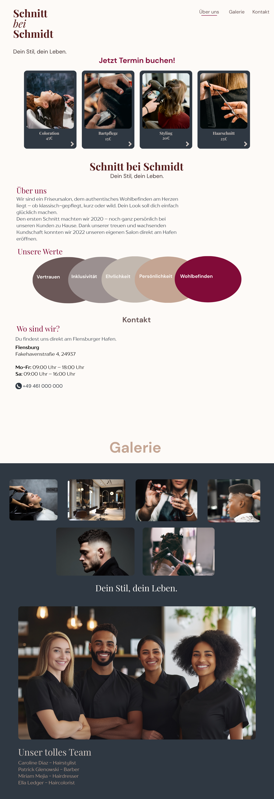
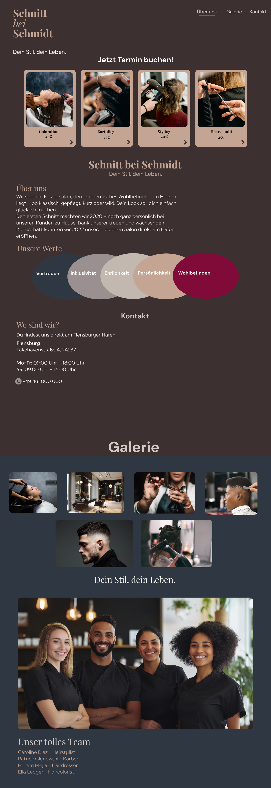
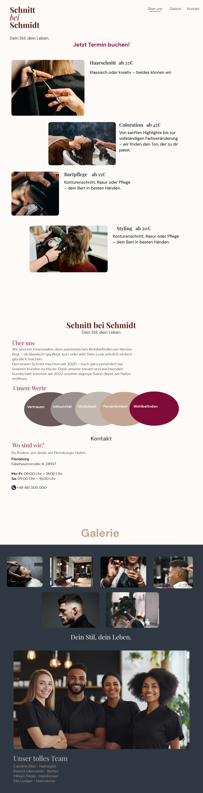
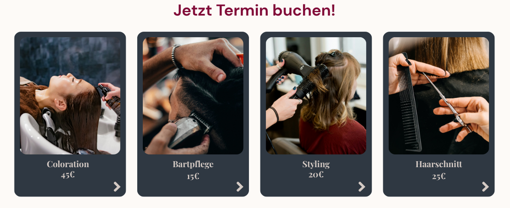
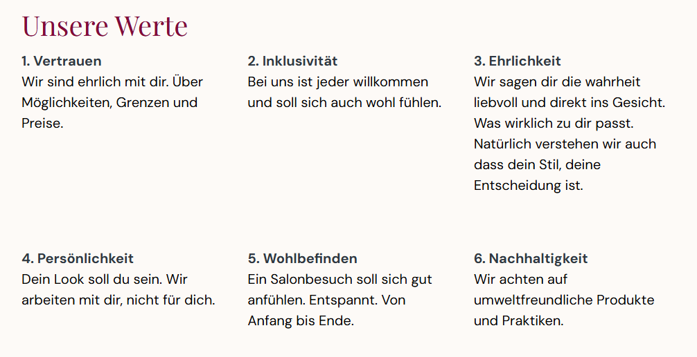
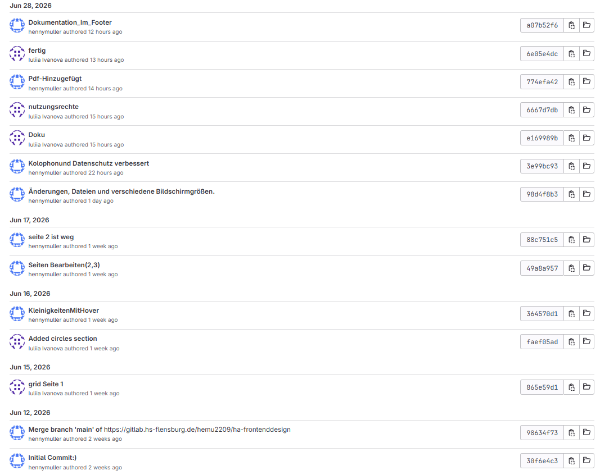
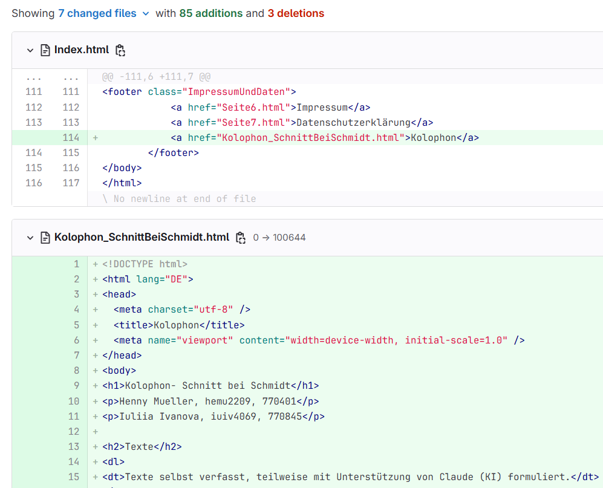
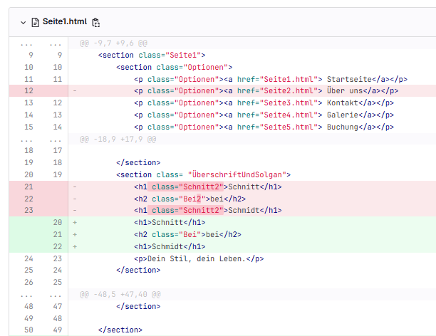
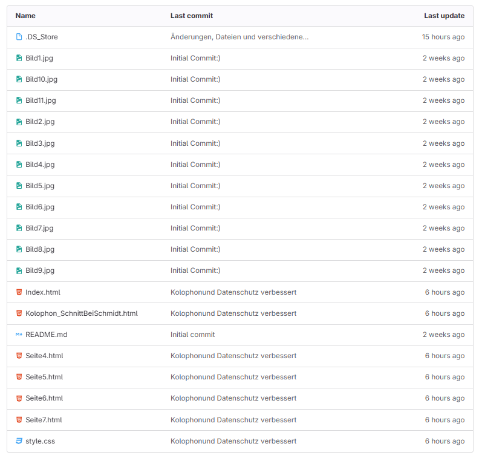
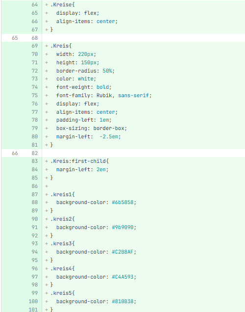

Von:

Die erste Variante ist im klassischen Stil gehalten. Das kühle Blau in Kombination mit Bordeauxrot schafft eine ruhige und zurückhaltende Atmosphäre, die an Norddeutschland erinnert. Die Grundidee bestand darin, die Zuverlässigkeit und Tradition des Innenraums zu unterstreichen.

Bei der zweiten Variante wurde eine dunklere Farbpalette verwendet. Dieses Design wirkt hochwertiger, erwies sich jedoch als zu düster und stellenweise überladen.

Die dritte Variante war eine überarbeitete Version der vorherigen Entwürfe. Die Mängel der ersten beiden Varianten wurden behoben: Die Fotos wurden nicht mehr als Schaltflächen wahrgenommen, die visuelle Hierarchie wurde verbessert und die Struktur der Startseite wurde übersichtlicher.
Für die weitere Entwicklung wurde die dritte Variante ausgewählt. Sie entspricht am besten dem Bild eines klassischen Salons, das wir uns vorgestellt haben, und eignet sich unserer Meinung nach am besten für einen Friseursalon in einer Stadt wie Flensburg. Die zurückhaltende Farbpalette passt gut zur ausgewählten Zielgruppe.
Wir haben die Rahmen um die Fotos entfernt, damit sie nicht wie Schaltflächen aussehen.

Die runden Blöcke auf der Startseite wurden entfernt, da sie sich schlecht an mobile Geräte anpassten und die Lesbarkeit des Textes beeinträchtigten.

Die Farbpalette basiert auf kühlem Blau, Bordeauxrot und hellem Beige. Diese Kombination schafft eine ruhige, klassische Atmosphäre und passt gut zu einem traditionellen Friseursalon.
Für die Überschriften wurde die Schriftart „Playfair Display“ gewählt, die den klassischen Charakter der Website unterstreicht. Für den Fließtext kommt „DM Sans“ zum Einsatz, die auf allen Geräten eine gute Lesbarkeit gewährleistet. In einzelnen Elementen wird „Lora“ verwendet.
Die Hauptbereiche wurden mithilfe von CSS Grid gestaltet, wodurch sich der Inhalt übersichtlich anordnen und problemlos an verschiedene Bildschirmgrößen anpassen lässt.
Die Informationen sind wie folgt gegliedert: Dienstleistungen, Informationen zum Salon, Werte und das Team.
Die Anpassung der Website erfolgt mithilfe von Media Queries. Auf kleinen Bildschirmen werden mehrspaltige Blöcke in eine einzige Spalte umgewandelt, und die Größe der Bilder und des Textes wird für eine bessere Lesbarkeit angepasst.
Um die Zusammenarbeit zu erleichtern, wurde ein Repository in GitLab erstellt. Alle Änderungen wurden regelmäßig in das Repository hochgeladen, wodurch es möglich war, den Entwicklungsprozess zu verfolgen, parallel zu arbeiten und bei Bedarf auf frühere Versionen des Projekts zurückzugreifen.

Im Folgenden werden die wichtigsten Entwicklungsschritte mit entsprechenden Screenshots aus GitLab vorgestellt.



In dieser Phase wurde versucht, die Werte des Friseursalons in Form von runden Blöcken darzustellen. Später wurde diese Idee verworfen, da sie keine funktionalen Vorteile hatte und das adaptive Layout unnötig kompliziert gemacht hat.

Bei der Entwicklung wurden semantische HTML-Tags verwendet: header, nav, section, footer, Überschriften h1–h4, Listen, Links und Bilder. Dies macht die Struktur der Seiten übersichtlicher und verbessert die Barrierefreiheit der Website.
Für das Layout wurden CSS Grid und Flexbox verwendet. Die Farben wurden in CSS-Variablen (:root) ausgelagert, was die Arbeit mit der Farbpalette vereinfachte. Die Anpassung an verschiedene Geräte wurde mithilfe von Media Queries umgesetzt.